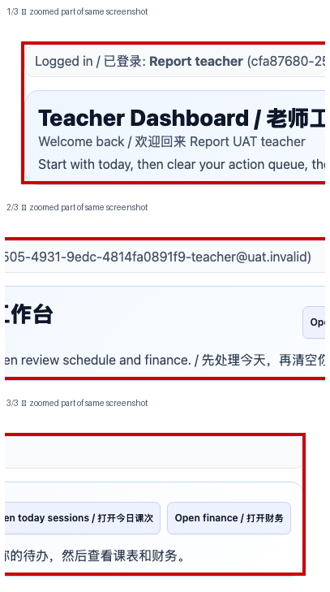

Teacher Account, Profile, Notices, and Daily Start
功能编号：TEACHER_ONBOARDING_PROFILE 版本：20261102A 排版顺序：先完整中文版，再完整英文版 Layout: Complete Chinese section first, followed by the complete English section
截图使用隔离培训数据并对应当前操作入口；不同账号的菜单和权限可能不同。涉及合同、财务、正式排课或家长发送时，先核对对象与系统状态。 / Screenshots use isolated training data and current workflow entries. Menus and permissions vary by account. Verify the target and system state before contracts, finance actions, formal scheduling or parent publication. 一份文档只讲一个功能。 网页端与小程序端分开；员工按编号一步一步操作。 One document covers one function only. Web and Mini Program guides are separate.
中文版 · 操作前准备
点击任何按钮前，先完成这四项准备
准备
使用本人账号和岗位对应工作台。
除非主管明确授权，否则只使用培训数据。
准备正确的对象、日期、负责人和所需资料。
把 PDF 与系统并排打开，每次只做一个编号步骤。
禁止
不使用同事账号。
不猜测姓名、金额、日期、状态或缺失字段。
结果不明确时不重复点击保存、应用、批准、发布或发送。
页面不一致时立即停止并询问负责人。
中文版 · 完整步骤总览
老师账号、个人资料、通知与每日开工
1登录后先核对顶部姓名、老师身份和已关联档案；出现“老师资料未关联”时停止并联系管理员。
2从老师工作台先看今日课程、待点名、待反馈、交接风险、报销补件和工资确认，不从聊天消息猜任务。
3上课前确认今日课程和学生；课程、时间、地点或学生不正确时不自行修改，立即交给教务核对。
4打开通知并处理要求确认的项目；管理反馈必须阅读完整内容后确认，不得只点“已读”。
5检查签到警示；只处理属于本人且事实清楚的警示，错误记录保留页面和时间证据后升级。
6检查教师名片的姓名、科目、授课语言、经验和介绍；可自行编辑介绍，其余资料有误时联系管理员。
中文流程 · 第 1 步，共 6 步
登录后先核对顶部姓名、老师身份和已关联档案；出现“老师资料未关联”时停止并联系管理员。

培训账号示例，空列表不代表实际没有任务。 / Training example; an empty list does not describe live tasks. 分段放大同一真实截图，按 1→2→3 阅读。 / Enlarged parts of one real screenshot, in order.
Use training data unless a manager authorises real data.
Prepare the correct target, date, owner, and source records.
Keep this PDF beside the system and complete one numbered step at a time.
Never
Do not use another employee's account.
Do not guess names, amounts, dates, statuses, or missing fields.
Do not repeat Save, Apply, Approve, Publish, or Send when the result is unclear.
Stop and ask the owner when the page differs.
ENGLISH SECTION · WORKFLOW OVERVIEW
Teacher Account, Profile, Notices, and Daily Start
1After login, verify the name, Teacher identity, and linked profile; stop and contact an administrator if the profile is not linked.
2On the Teacher Dashboard, first review today’s sessions, attendance, feedback, handoff risks, rejected claims, and payroll confirmation; never infer tasks from chat alone.
3Before class, confirm today’s sessions and students; do not edit an incorrect course, time, location, or student yourself—send it to Academic for review.
4Open Notices and acknowledge required items; read manager feedback in full before acknowledging it.
5Review sign-in alerts; act only on alerts assigned to you with clear facts, and preserve page and time evidence before escalating an incorrect record.
6Check the teacher card’s name, subjects, language, experience and introduction. Edit your introduction yourself; ask an administrator to correct other details.
ENGLISH WORKFLOW · STEP 1 OF 6
After login, verify the name, Teacher identity, and linked profile; stop and contact an administrator if the profile is not linked.
培训账号示例，空列表不代表实际没有任务。 / Training example; an empty list does not describe live tasks. 分段放大同一真实截图，按 1→2→3 阅读。 / Enlarged parts of one real screenshot, in order.
Complete in this order
Open Teacher Dashboard and verify the signed-in name is yours.
If the teacher profile is not linked, stop and contact an administrator.
STOP: If the name, amount, permission, status, or button differs, do not continue or click again. Preserve the screen and contact the workflow owner.
ENGLISH WORKFLOW · STEP 2 OF 6
On the Teacher Dashboard, first review today’s sessions, attendance, feedback, handoff risks, rejected claims, and payroll confirmation; never infer tasks from chat alone.
培训账号示例，空列表不代表实际没有任务。 / Training example; an empty list does not describe live tasks.
Complete in this order
Under Today, check today’s classes and confirmation status.
Under My Work, review attendance, handoff risks, claims, management feedback and payroll; select the relevant Open link.
STOP: If the name, amount, permission, status, or button differs, do not continue or click again. Preserve the screen and contact the workflow owner.
ENGLISH WORKFLOW · STEP 3 OF 6
Before class, confirm today’s sessions and students; do not edit an incorrect course, time, location, or student yourself—send it to Academic for review.
培训账号示例，空列表不代表实际没有任务。 / Training example; an empty list does not describe live tasks.
Complete in this order
Open My Sessions and check the student, course, time and location.
Contact Academic about any errors; the training example has no sessions.
STOP: If the name, amount, permission, status, or button differs, do not continue or click again. Preserve the screen and contact the workflow owner.
ENGLISH WORKFLOW · STEP 4 OF 6
Open Notices and acknowledge required items; read manager feedback in full before acknowledging it.
培训账号示例，空列表不代表实际没有任务。 / Training example; an empty list does not describe live tasks.
Complete in this order
Open Notices, read the complete notice and acknowledge it when required.
Manager Feedback is a separate page: read the feedback before acknowledging it.
STOP: If the name, amount, permission, status, or button differs, do not continue or click again. Preserve the screen and contact the workflow owner.
ENGLISH WORKFLOW · STEP 5 OF 6
Review sign-in alerts; act only on alerts assigned to you with clear facts, and preserve page and time evidence before escalating an incorrect record.
培训账号示例，空列表不代表实际没有任务。 / Training example; an empty list does not describe live tasks.
Complete in this order
Open Sign-in Alerts and review your pending items and their sessions.
For an incorrect record, note the session and time and contact Academic.
STOP: If the name, amount, permission, status, or button differs, do not continue or click again. Preserve the screen and contact the workflow owner.
ENGLISH WORKFLOW · STEP 6 OF 6
Check the teacher card’s name, subjects, language, experience and introduction. Edit your introduction yourself; ask an administrator to correct other details.
培训账号示例，空列表不代表实际没有任务。 / Training example; an empty list does not describe live tasks.
Complete in this order
Open My Teacher Card and check your name, subjects, language and experience.
You may edit and save your introduction. Ask an administrator to correct other details before downloading the PDF.
STOP: If the name, amount, permission, status, or button differs, do not continue or click again. Preserve the screen and contact the workflow owner.
ENGLISH SECTION · FINAL CHECK
Report completion only when every item is true
Employee self-check
The account, platform, role, and target record are correct.
Every step was completed in order.
The expected final status remains after refresh.
Non-sensitive evidence of the result was saved.
You can explain who handles an exception.
Stop and escalate
Required data or permission is missing.
The page, button, or status differs from the guide.
An unauthorised action would affect finance, contracts, packages, payroll, live sessions, or parent-visible content.